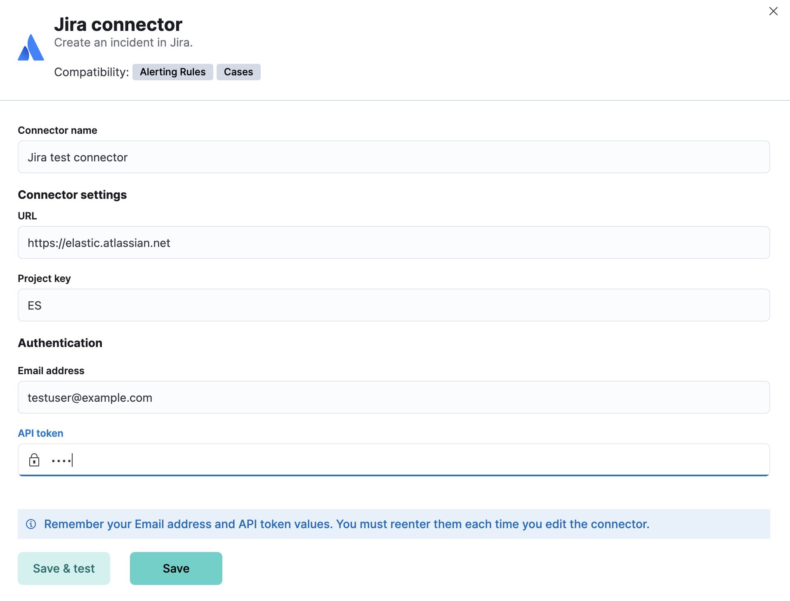
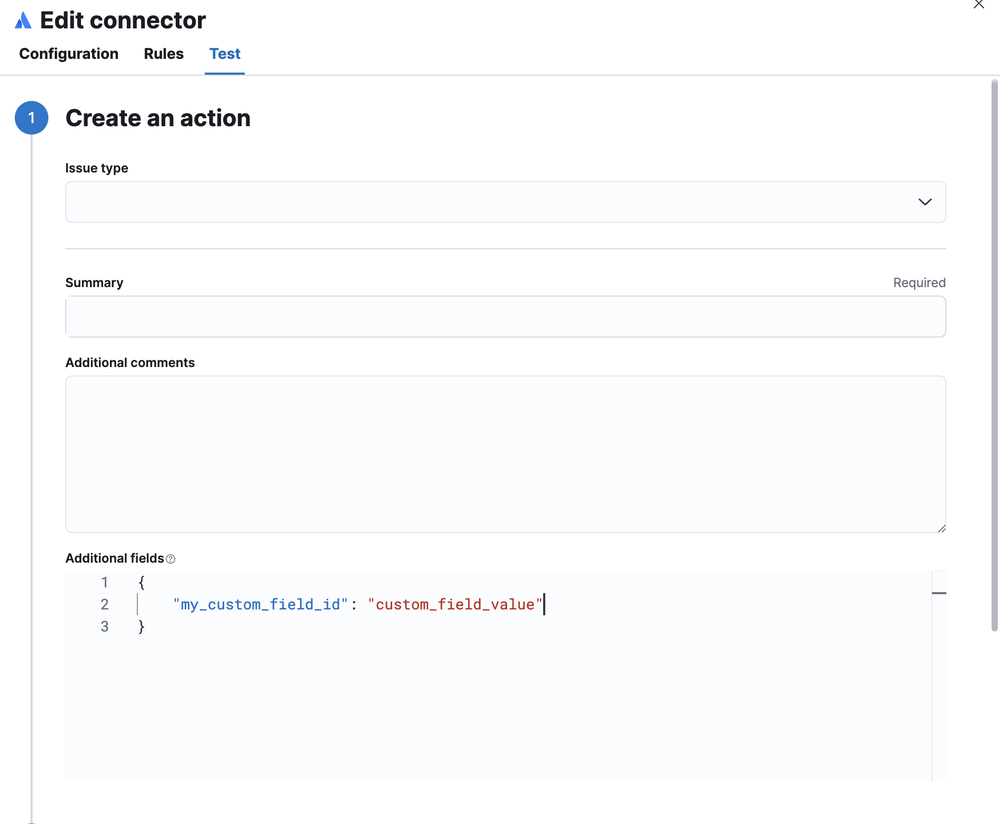

Jira connector and action
editThe Jira connector uses the REST API v2 to create Atlassian Jira issues.
Compatibility
editJira on-premise deployments (Server and Data Center) are not supported.
Create connectors in Kibana
editYou can create connectors in Stack Management > Connectors or as needed when you’re creating a rule. For example:

Connector configuration
editJira connectors have the following configuration properties:
- Name
- The name of the connector.
- URL
- Jira instance URL.
- Project key
- Jira project key.
- The account email for HTTP Basic authentication.
- API token
- Jira API authentication token for HTTP Basic authentication.
Test connectors
editYou can test connectors as you’re creating or editing the connector in Kibana. For example:

Jira actions have the following configuration properties.
- Issue type
- The type of the issue.
- Priority
- The priority of the incident.
- Labels
- The labels for the incident.
- Title
- A title for the issue, used for searching the contents of the knowledge base.
- Description
- The details about the incident.
- Parent
-
The ID or key of the parent issue. Only for
Subtaskissue types. - Additional comments
- Additional information for the client, such as how to troubleshoot the issue.
- Additional fields
- An object that contains custom field identifiers and their values. These custom fields must comply with your Jira policies; they are not validated by the connector. For example, if a rule action does not include custom fields that are mandatory, the action might fail.
Connector networking configuration
editUse the Action configuration settings to customize connector networking configurations, such as proxies, certificates, or TLS settings. You can set configurations that apply to all your connectors or use xpack.actions.customHostSettings to set per-host configurations.